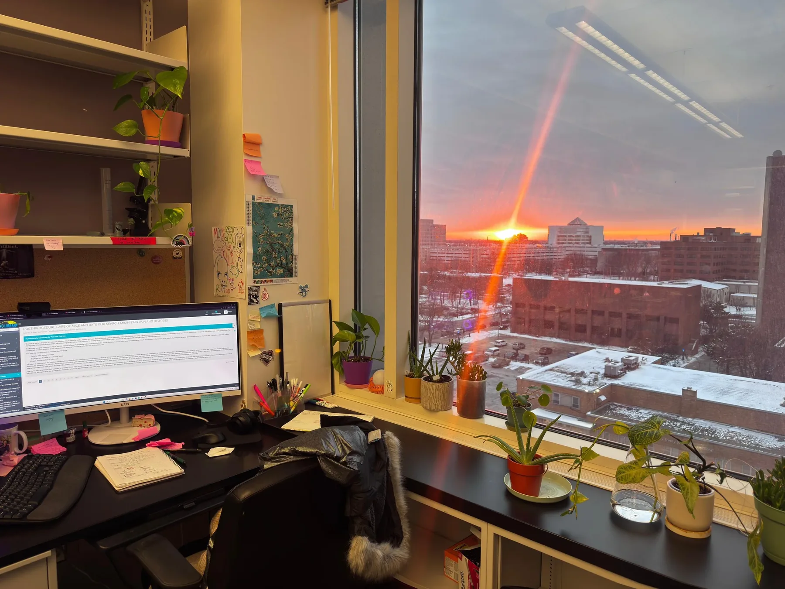

Join the lab
The lab office at sunset
How we work
The lab runs on open discussion, mutual support, creativity and integrity. Every member gets mentorship built around them and shapes their own ideas and projects. We value rigorous, inventive, hypothesis-driven research, and we think a diverse and inclusive culture is what makes it possible.
Respect and collaboration
Every member of the team is valued and supported, whatever their background, identity or career stage. Professionalism, kindness and helping each other are the norm. Success is shared, and we celebrate each other's achievements as our own. Ideas move freely, contributions get credit, and we meet setbacks together. Research should be intellectually fulfilling, and fun.
New to coding
Don't let the coding put you off. Our experiments record hundreds of neurons at once, measure neurotransmitter signals with fiber photometry, and film behavior simultaneously. Turning that into findings takes code, and bringing experimental neuroscience and computational insights together is central to how we work.
You don't need programming experience to join. Every lab member gets structured mentorship in coding, mainly in Python and MATLAB, and learns by building the analysis pipelines for their own experiments. You'll leave the lab able to design an experiment and write the code that analyzes it.
Get in touch
mlujan@uic.eduCollege of Medicine Research Building (COMRB), Room 7091
909 S Wolcott Ave
Chicago, IL 60612